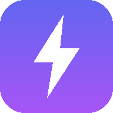

Paste your Apps Script web app URL (Deploy → Manage deployments → copy the URL ending in /exec). It is stored only on this device.
Tip: sign in to Google in this browser first. If the app shows a blank page, open the URL once in the normal browser to authorize it.
TaskFlow needs a connection to load. Your recent data is cached inside the app — it will open as soon as you're back online.